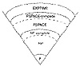

| Previous | Table of Contents | Next |
Complexity of Problems
Complexity theory also classifies the inherent complexity of problems, not just the complexity of particular algorithms used to solve problems. (Excellent introductions to this topic are [600, 211, 1226]; see also [1096, 27, 739].) The theory looks at the minimum time and space required to solve the hardest instance of a problem on a theoretical computer known as a Turing machine . A Turing machine is a finite-state machine with an infinite read-write memory tape. It turns out that a Turing machine is a realistic model of computation.
Problems that can be solved with polynomial-time algorithms are called tractable, because they can usually be solved in a reasonable amount of time for reasonable-sized inputs. (The exact definition of “reasonable” depends on the circumstance.) Problems that cannot be solved in polynomial time are called intractable, because calculating their solution quickly becomes infeasible. Intractable problems are sometimes just called hard. Problems that can only be solved with algorithms that are superpolynomial are computationally intractable, even for relatively small values of n.
It gets worse. Alan Turing proved that some problems are undecidable . It is impossible to devise any algorithm to solve them, regardless of the algorithm’s time complexity.
Problems can be divided into complexity classes, which depend on the complexity of their solutions. Figure 11.1 shows the more important complexity classes and their presumed relationships. (Unfortunately, not much about this material has been proved mathematically.)
On the bottom, the class P consists of all problems that can be solved in polynomial time. The class NP consists of all problems that can be solved in polynomial time only on a nondeterministic Turing machine: a variant of a normal Turing machine that can make guesses. The machine guesses the solution to the problem—either by making “lucky guesses” or by trying all guesses in parallel—and checks its guess in polynomial time.
NP ’s relevance to cryptography is this: Many symmetric algorithms and all public-key algorithms can be cracked in nondeterministic polynomial time. Given a ciphertext C, the cryptanalyst simply guesses a plaintext, X, and a key, k, and in polynomial time runs the encryption algorithm on inputs X and k and checks whether the result is equal to C. This is important theoretically, because it puts an upper bound on the complexity of cryptanalysis for these algorithms. In practice, of course, it is a deterministic polynomial-time algorithm that the cryptanalyst seeks. Furthermore, this argument is not applicable to all classes of ciphers; in particular, it is not applicable to one-time pads—for any C, there are many X, k pairs that yield C when run through the encryption algorithm, but most of these X s are nonsense, not legitimate plaintexts.

Figure 11.1 Complexity classes.
The class NP includes the class P, because any problem solvable in polynomial time on a deterministic Turing machine is also solvable in polynomial time on a nondeterministic Turing machine; the guessing stage can simply be omitted.
If all NP problems are solvable in polynomial time on a deterministic machine, then P = NP. Although it seems obvious that some NP problems are much harder than others (a brute-force attack against an encryption algorithm versus encrypting a random block of plaintext), it has never been proven that P ≠ NP (or that P = NP). However, most people working in complexity theory believe that they are unequal.
Stranger still, specific problems in NP can be proven to be as difficult as any problem in the class. Steven Cook [365] proved that the Satisfiability problem (given a propositional Boolean formula, is there a way to assign truth values to the variables that makes the formula true?) is NP-complete . This means that, if Satisfiability is solvable in polynomial time, then P = NP. Conversely, if any problem in NP can be proven not to have a deterministic polynomial-time algorithm, the proof will show that Satisfiability does not have a deterministic polynomial-time algorithm either. No problem is harder than Satisfiability in NP.
Since Cook’s seminal paper was published, a huge number of problems have been shown to be equivalent to Satisfiability; hundreds are listed in [600], and some examples follow. By equivalent, I mean that these problems are also NP-complete; they are in NP and also as hard as any problem in NP . If their solvability in deterministic polynomial time were resolved, the P versus NP question would be solved. The question of whether P = NP is the central unsolved question of computational complexity theory, and no one expects it to be solved anytime soon. If someone showed that P = NP, then most of this book would be irrelevant: As previously explained, many classes of ciphers are trivially breakable in nondeterministic polynomial time. If P = NP, they are breakable by feasible, deterministic algorithms.
Further out in the complexity hierarchy is PSPACE . Problems in PSPACE can be solved in polynomial space, but not necessarily polynomial time. PSPACE includes NP, but some problems in PSPACE are thought to be harder than NP. Of course, this isn’t proven either. There is a class of problems, the so-called PSPACE-complete problems, with the property that, if any one of them is in NP then PSPACE = NP and if any one of them is in P then PSPACE = P .
And finally, there is the class of problems called EXPTIME . These problems are solvable in exponential time. The EXPTIME-complete problems can actually be proven not to be solvable in deterministic polynomial time. It has been shown that P does not equal EXPTIME .
| Previous | Table of Contents | Next |
){kind=link}
){kind=link}